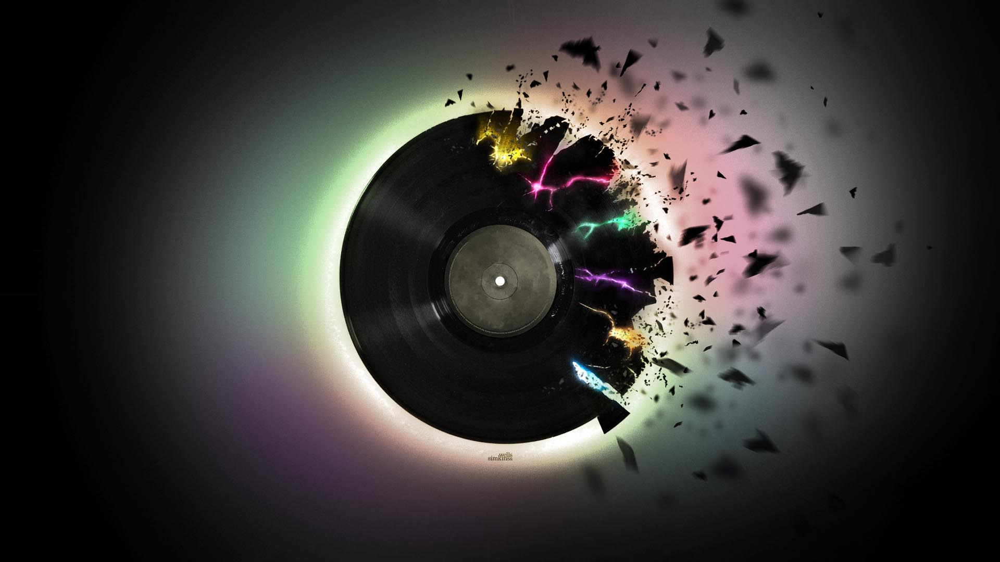
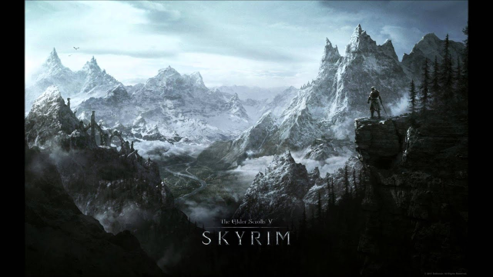
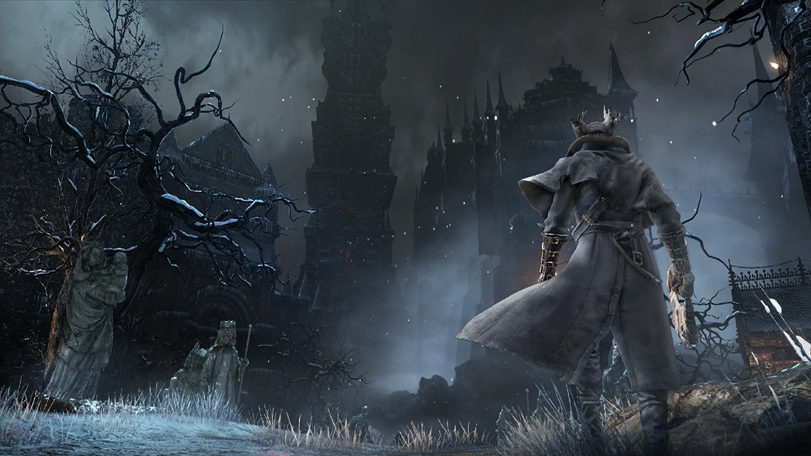
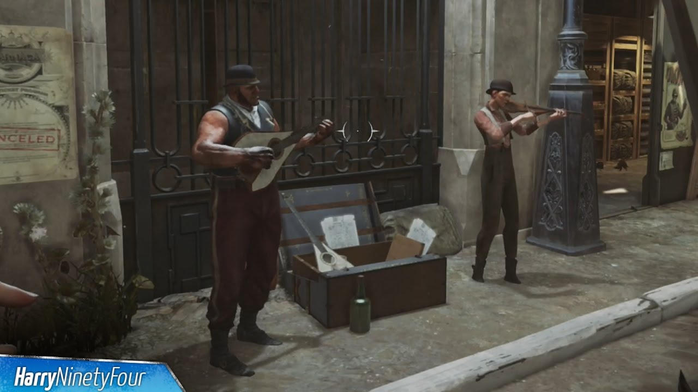
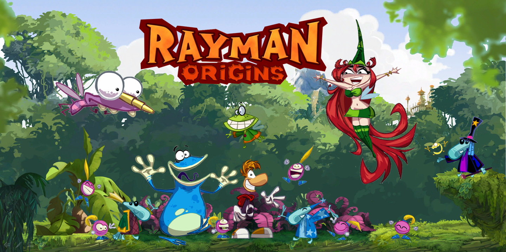
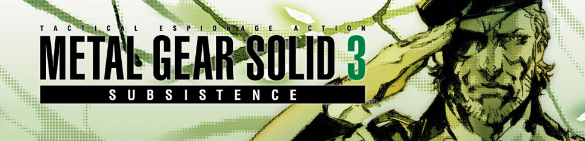
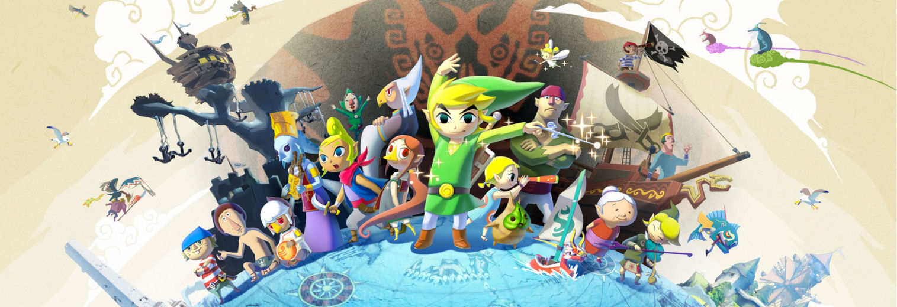
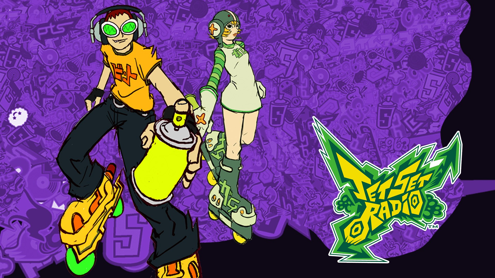
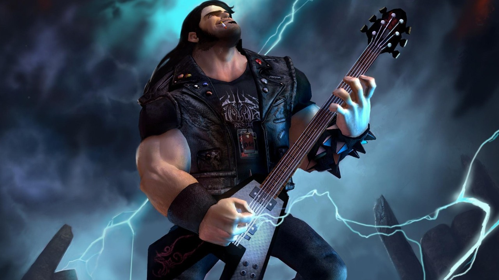
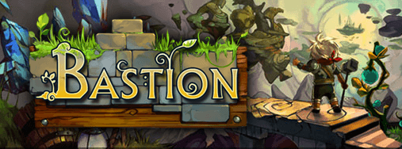

July 10, 2019

Music! The soundtracks to our lives are indeed wonderful things. Games have a unique way of bringing out the feelings of other worlds. Other possibilities. New ways of seeing old ideas.
Me? I LOVE music. I'm the kind of guy who goes to sleep with a Jazz album and wakes up with a collection of classics to kick start my morning. More often then not this means I'm listening to some
sweet SWEET gaming music.
After YEARS of listening, I've come up with a list that properly encapsulates the best gaming has to offer. If you like me give a damn about the sounds that stream into your head. Then be sure to give the classics below a proper listen. You're ears will thank you.

Light on vocals and heavy on feeling Jeremy Soul puts his heart and...well soul into this atmospheric and inspiring set of tunes. The bombastic tracks are good for a pickup while scaling the steeper moments in your day. The quiet songs are what make this a listening must. Hauntingly melodic tunes that remind you of natures majesty are littered through out this album. A fantastic edition for those gamers that seek the feeling of adventure.

Few can deny that Halo changed the landscape of gaming. Often overlooked are the fantastic orchestral songs that add a sense of grandeur to chiefs journey. The third entry was to be the exciting finale to the series (cough WAS cough cough) as such, the team at Bungie were sure to bring out the best talent they could. I have my own critisms of the final product itself. That said, I'd be a dirty liar if I denied this album gives me chills.

From blood curdling screams to low guttural drones that creep in from nowhere. Bloodborne owes a great deal to composer Cris Velasco for digging in deep and creating a truly other worldly sound. Was a dark pact made? I cannot tell you.

You may be surprised to see this on the objective list of greatest gaming music of all time. Admittedly, Dishonored 2's music is subtle to a flaw. If you are patient, and if you are willing to go along for the ride, you'll find an eclectic collection of instruments, feelings and emotions. Everything you'd want playing in the background as you sculk around that one place you REALLY shouldn't be in.

Rayman holds a special place in my heart. As a music lover, any game featuring a level made from didgeridoo's has my attention. Upbeat whistles and charming gibberish run amuck on this album. A sharp contrast to most soundtracks on this list. It certainly should not be missed.

Let us never forget the introduction to this masterpiece. Snake Eater has it's players travel back in time, bringing with it a soudn and feel utterly unique.

Charming, filled with pep, new and nostalgic all in one go. Wind Waker may be my favorite Zelda game. As such, I felt a need to share it's charms with you.

Memes aside, one simply need boot up this classic to see why it's got a special place in the gaming realm. A sharp collection of beats, raps and provoking hooks makes this an essential album for any series audiophiles.

Some might say it's cheating to list a game comprising the best rock and roll as the backbone of it's concept. I say NOT mentioning it would be a far greater crime. This game was criminally under appreciated, with a soundtrack made from the dreams 'or nightmares' of Ozzy himself.

A mix of classic instrumental samples, chilling vocal performances and a bit of electric to tie it together. Darren Korb came out the gate swinging with this fantastic soundtrack.